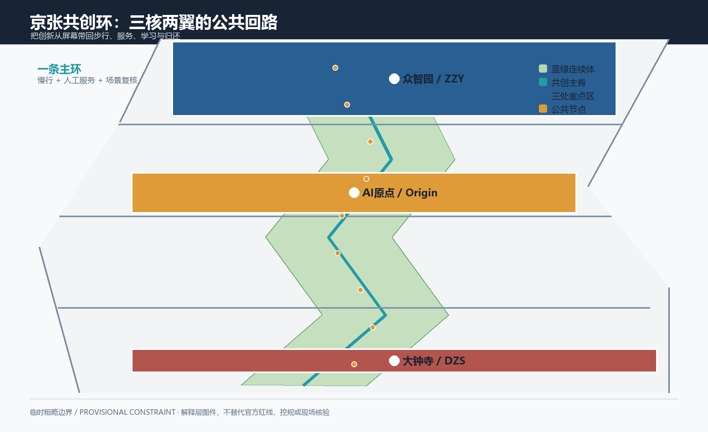
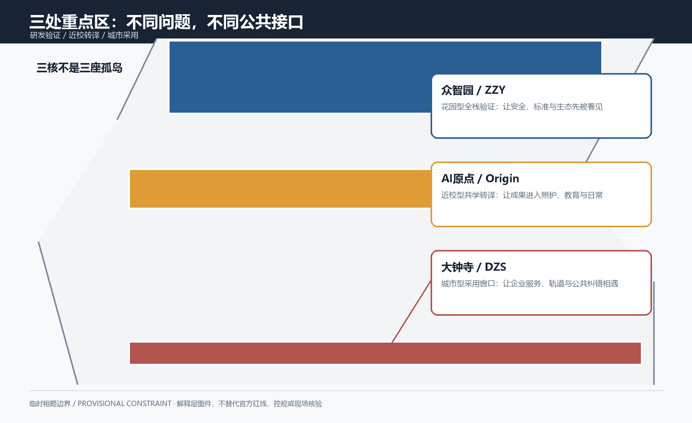
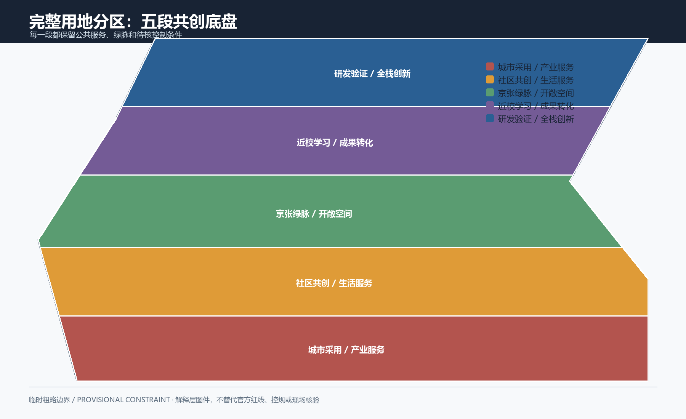
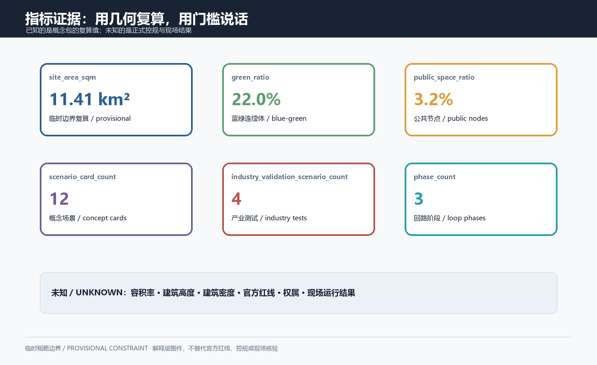
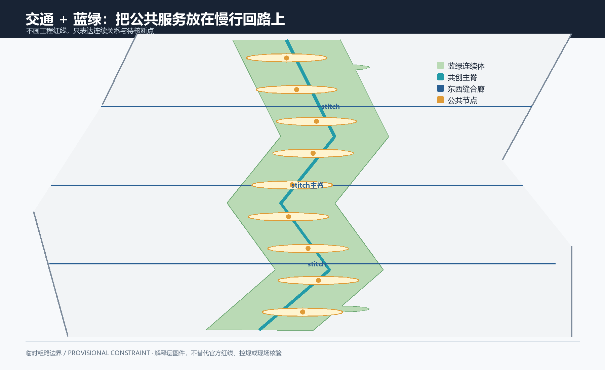

统筹研究范围
约 4,360 万平方米：连接 AI 创新链、人才链、服务链与文化叙事。
- 一条主脊、两翼服务网
- 六个方法案例参照
- 全球活动与社区归还
把 AI 创新放回公共生活：看见问题，试一个低风险原型，公开纠错，再决定保留、修改、暂停或归还。页面只读取本包的本地图版与结构化证据，不加载远程地图、脚本、字体或接口。
五张本地图版与九个 GeoJSON 图层共同表达一条共创主脊、两翼服务网、三座转译庭和四道公共门。



数值与 metrics.json 一致；known 只代表提交几何可重算，unknown 代表当前资料不能支持的法定控制。
统筹研究范围回答产业与未来城市，整体设计范围回答公共骨架，重点区回答可被试用的空间协议。
约 4,360 万平方米：连接 AI 创新链、人才链、服务链与文化叙事。
公告值约 1,140 万平方米：组织慢行、蓝绿、用地和更新关系。
三处重点区约 368.4 万平方米：验证、转译、采用三个动作。
重点区域不是封闭园区，而是把科研、社区和企业服务翻译成可理解、可退出的公共接口。
低速实验廊、模型安全解释牌、低碳和城市问题共测。优先使用公开或合成样例，人工确认后再进入下一轮。
共享课堂、邻里帮助台、儿童/长者可读界面。每个智能入口旁都有纸面地图和人工咨询。
换乘前室、企业服务窗口、共创归还墙。把测试结果写成保留、修改、暂停或归还记录。
概念用地图层采用 05、0802、0804、1401、0702 五类可读代码，表示混合功能关系，不表示地块权利或法定用途。

铁路记忆为线、慢行可读为面、换乘服务为门。ROAD-001 是概念主脊，三条横向联系只表达连通关系。

公共空间要做到看得懂、坐得下、能参与、可退出；蓝绿面积是概念几何关系，不是生态性能承诺。
沿主脊布置可停留边界、雨雪替代路线和可拆卸遮荫。正式水文、园林和运维条件待核。
把问题采集、说明、试用和归还放到日常动线上，保留低刺激角落和人工服务台。
共同实验廊、铁路记忆庭、共创归还墙是概念公共空间组件，需逐项清权。
先留、再修、后谈新增。15 个建筑对象支持量体关系检查，但不提供法定高度、密度、容积率或工程结论。
优先保留可承载公共服务和铁路记忆叙事的对象，采用可逆再利用。
围绕无障碍、采光、能源、消防和运维建立待核改造清单。
权属、结构、现状和公共影响资料齐全后，才进入专业复核。
12 张场景卡；4 张产业验证卡。每张都带服务对象、地点、最小数据、人工兜底、停止按钮和评价方式。
公开计数 + 人工走访，形成断点清单。
坡度、休息点、人工陪同和纸面路径。
只整理机构信息，不做诊断。
课程、开放课堂和社区问题目录。
知识产权、测试、融资、人才步骤。
公开/合成样例与可解释性演示。
人工监管和人车冲突复核。
清权文字与抽象图形。
匿名问题分类与公开处理状态。
聚合趋势，不展示住户明细。
提交、审阅、回退和致谢流程。
多语路线、人工接待和安静空间。
公告与任务书要求被拆到正文、矩阵、图层、指标、PDF、HTML 和自检文件；正式来源与方法案例分开登记。
核心来源、发布方、链接、访问日期、允许用途和限制见 `sources.json`；Peer work 只记录渐进阅读方法，不复制图形资产。
正式红线、控规、道路、权属、建筑、遗产、市政和服务容量都在 `assumptions.json` 中保持待核，并在图层中可定位。
当前页面是离线静态展示；最终状态以 validate、spatial、visual、professional、self-check 和 participant preflight 的 JSON 结果为准。
图层、指标、图版、矩阵和正文使用同一包路径，数据缺口不被隐藏。
每个 AI 场景保留人工、纸面或普通数字入口，并有停止/归还条件。
正式边界、强度、权属、安全、遗产、市政、隐私和服务能力仍不能由本包替代。